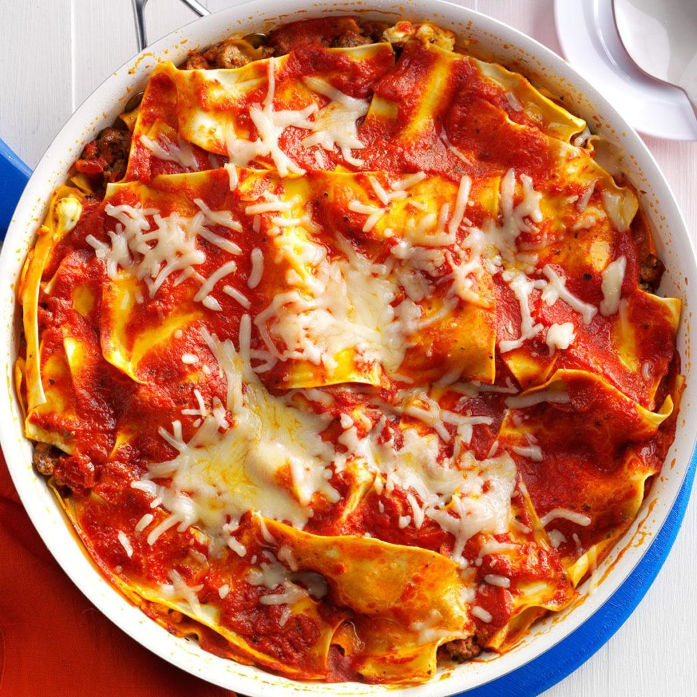

Saucy Skillet Lasagna
Ingredients
1 pound ground beef
1 can (14-1/2 ounces) diced tomatoes, undrained
2 large eggs, lightly beaten
1-1/2 cups ricotta cheese
4 cups marinara sauce
1 package (9 ounces) no-cook lasagna noodles
1 cup shredded part-skim mozzarella cheese, optional
Directions
- In a large skillet, cook beef over medium heat 6-8 minutes or until no longer pink, breaking into crumbles; drain. Transfer to a large bowl; stir in tomatoes. In a small bowl, combine eggs and ricotta cheese.
- Return 1 cup meat mixture to the skillet; spread evenly. Layer with 1 cup ricotta mixture, 1-1/2 cups marinara sauce and half of the noodles, breaking noodles to fit as necessary. Repeat layers. Top with remaining marinara sauce.
- Bring to a boil. Reduce heat; simmer, covered, 15-17 minutes or until noodles are tender. Remove from heat. If desired, sprinkle with mozzarella cheese. Let stand 2 minutes or until cheese is melted.
Nutrition Facts
1 serving: 430 calories, 18g fat (8g saturated fat), 108mg cholesterol, 750mg sodium, 41g carbohydrate (11g sugars, 4g fiber), 27g protein.
Total Time
Prep/Total Time: 30 min.
Previous
30